Lễ công bố Điểm du lịch cộng đồng Mường Cốc, xã Mỹ Đức (xã An Phú cũ), thành phố Hà Nội, được tổ chức đúng vào mùa sen ngày 01 tháng 7 năm 2026 — thời điểm cảnh quan làng Mường đẹp nhất trong năm. Đây không đơn thuần là một buổi lễ nghi thức, mà là lần đầu tiên Mường Cốc chính thức ra mắt công chúng, đại biểu, doanh nghiệp lữ hành và báo chí với tư cách một điểm đến hoàn chỉnh, có sản phẩm, có tuyến tham quan và có bản sắc riêng. Vì vậy, toàn bộ không gian sự kiện được thiết kế như một lát cắt thu nhỏ của chính điểm đến: khách bước vào lễ công bố cũng là bước vào một trải nghiệm Mường Cốc đầu tiên.
Toàn bộ thiết kế bám sát thông điệp định vị nhất quán của điểm đến: "Mường Cốc — Chạm vào bình yên", với năm cam kết giá trị cốt lõi là Bản sắc thật — Con người thật — Trải nghiệm thật — Văn hóa thật — Thiên nhiên thật. Đây là kim chỉ nam thẩm mỹ và nội dung cho mọi hạng mục trang trí, từ sân khấu chính đến góc check-in nhỏ nhất.
Tinh thần xuyên suốt là triết lý "5 Không": không chạy theo sự hoành tráng, phô trương xa rời bản sắc địa phương; không lạm dụng vật liệu nhân tạo làm mất vẻ đẹp tự nhiên của không gian làng quê; không sao chép mô hình du lịch của địa phương khác; không sân khấu hóa, biểu diễn hóa quá mức làm mất đi giá trị văn hóa chân thực; và không đánh đổi môi trường, cảnh quan để lấy hiệu ứng ngắn hạn. Concept không gian lần này đạt được điều khó nhất: vừa tạo được ấn tượng mạnh về thị giác trong đêm hội, vừa giữ trọn vẹn cốt cách mộc mạc, chân thực của người Mường — hoành tráng mà không phô trương, hiện đại mà không xa lạ.
Nguyên tắc thứ nhất là bản sắc Mường làm gốc. Mọi vật liệu, hình khối, hoa văn đều lấy từ kho biểu tượng của chính cộng đồng: mái nhà sàn hình mai rùa, cồng chiêng và sắc bùa, trống đồng Đông Sơn, hoa văn cạp váy hình thoi — rồng — hươu, hoa sen, cùng bộ vật liệu tự nhiên gỗ — tre — lá. Không gian không vay mượn ngôn ngữ trang trí lễ hội đại chúng, mà kể đúng câu chuyện của vùng đất này, để mỗi đại biểu và du khách đều cảm nhận được đây là Mường Cốc chứ không phải bất kỳ nơi nào khác.
Nguyên tắc thứ hai là tối giản nhưng có chủ đề rõ ràng. Một không gian đẹp không phải là không gian có nhiều hiện vật nhất, mà là không gian kể được câu chuyện rõ ràng nhất. Thay vì trưng bày theo hướng "càng nhiều càng tốt" dễ gây rối mắt và làm giảm giá trị của từng hiện vật, thiết kế chủ động giảm mật độ, tạo khoảng thở để mỗi biểu tượng được nhìn thấy, được cảm nhận và được chụp ảnh đẹp. Đây cũng chính là gu thẩm mỹ mà du khách trong nước và quốc tế ngày càng ưa chuộng.
Nguyên tắc thứ ba là gắn chặt với sản phẩm du lịch. Mục tiêu sau cùng của lễ công bố là để khách hiểu Mường Cốc có gì để trải nghiệm — chứ không chỉ đẹp để ngắm. Vì vậy bản đồ du lịch, các tuyến tham quan, tuyến đạp xe, trải nghiệm nông nghiệp, cỗ lá Mường và rừng tràm được đưa lên vị trí trung tâm, biến không gian trang trí thành công cụ quảng bá sản phẩm thực sự.
Nguyên tắc thứ tư là bám hiện trạng và nguyên tắc thứ năm là nhận diện thống nhất. Thiết kế đặt trên nền đất thật cạnh Nhà văn hóa, tôn trọng địa hình và cảnh quan sẵn có thay vì áp đặt một sân khấu nhân tạo. Đồng thời, logo, slogan, hệ màu và bộ nhận diện điểm đến được lặp lại nhất quán trên sân khấu, đường vào, góc check-in và bản đồ — để hình ảnh Mường Cốc in đậm và lan tỏa sau sự kiện.
Sân khấu chính là trái tim của lễ công bố, được dàn dựng theo ngôn ngữ điện ảnh trong đêm hội: ánh đèn lung linh hắt lên các khối vật liệu tự nhiên, tạo chiều sâu và cảm giác trang trọng nhưng vẫn ấm áp, gần gũi. Mái nhà sàn hình mai rùa làm khung hình chủ đạo gợi mái ấm của người Mường; trống đồng Đông Sơn và cồng chiêng đặt ở vị trí trung tâm như biểu tượng của cội nguồn, của tiếng vọng văn hóa nghìn năm. Khác với những hiện vật được treo dàn trải trước đây, lần này các biểu tượng đặc trưng được đưa về đúng tâm điểm để tạo ấn tượng mạnh và một điểm nhấn duy nhất, dễ ghi nhớ.
Điểm cải tiến quan trọng nhất so với phương án ban đầu là tích hợp giới thiệu sản phẩm du lịch ngay trên sân khấu. Màn hình LED trung tâm không dùng để phô trương kỹ thuật, mà để trình chiếu bản đồ du lịch Mường Cốc cùng hình ảnh các tuyến trải nghiệm tiêu biểu: tuyến đạp xe khám phá làng Mường, trải nghiệm nông nghiệp, cỗ lá Mường, rừng tràm. Nhờ vậy, đại biểu và doanh nghiệp lữ hành không chỉ cảm nhận được bản sắc mà còn hình dung rõ Mường Cốc có những sản phẩm gì để bán, để đưa khách tới — đúng mục tiêu cốt lõi của một lễ công bố sản phẩm.
Câu hỏi đặt ra là làm sao vừa hoành tráng vừa giữ được "5 Không". Lời giải nằm ở chất liệu và sự tiết chế: sân khấu ưu tiên gỗ, tre, lá, thổ cẩm, hoa sen — vật liệu thật của địa phương — thay vì lạm dụng kết cấu công nghiệp; LED chỉ đóng vai trò kể chuyện, không lấn át không gian tự nhiên. Sự hoành tráng đến từ ánh sáng, bố cục và chiều sâu hình ảnh chứ không đến từ việc chất đầy vật liệu nhân tạo. Nhờ vậy, sân khấu vừa đủ sức tạo dấu ấn truyền thông mạnh, vừa trung thành với tinh thần mộc mạc, chân thực mà Mường Cốc theo đuổi.
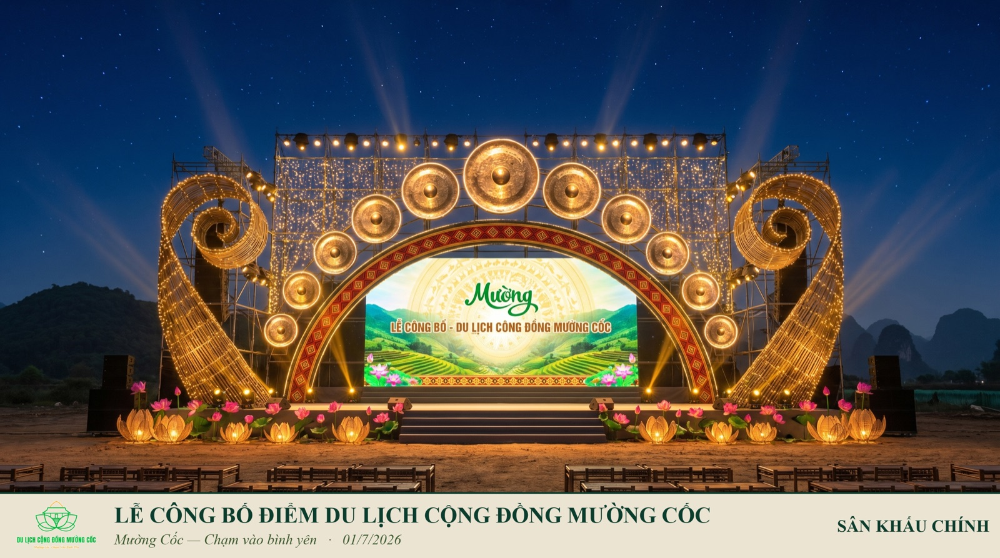
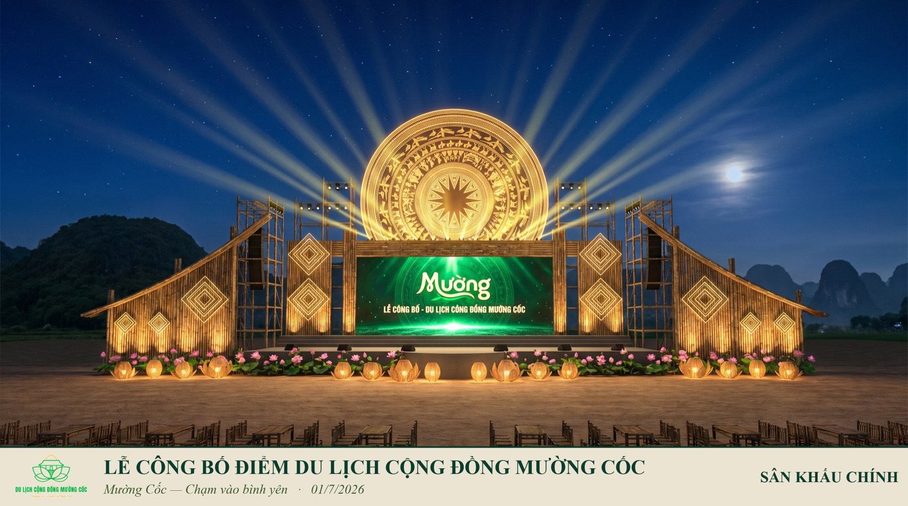
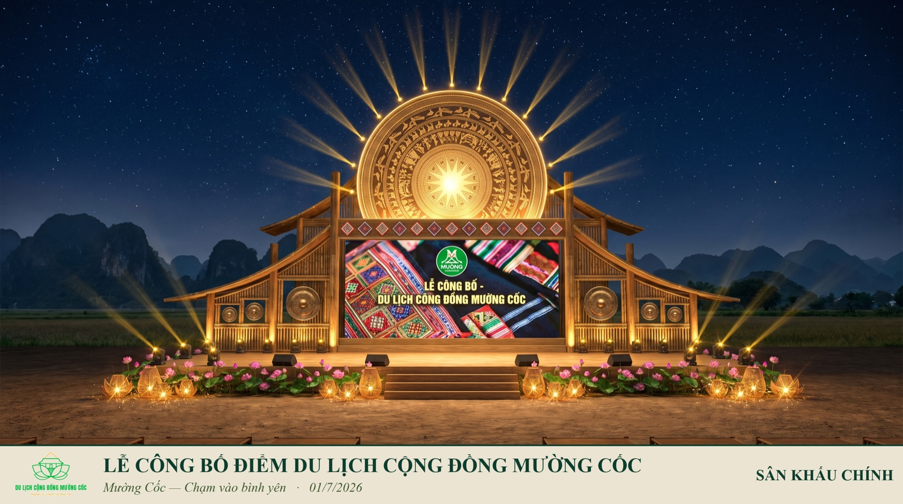
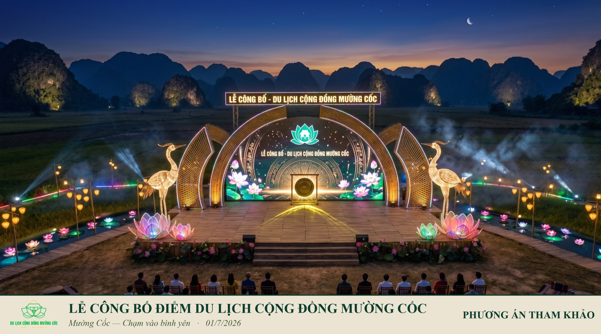
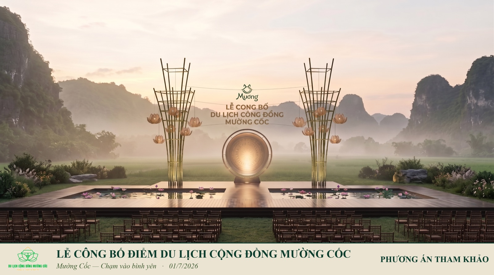
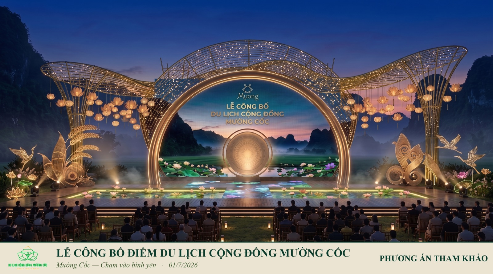
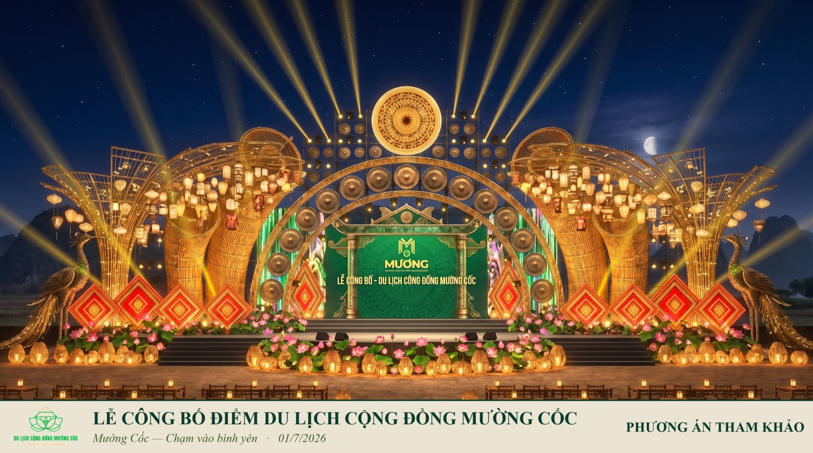
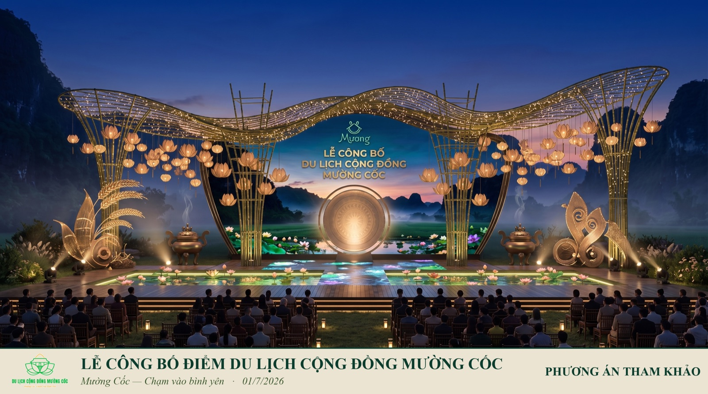
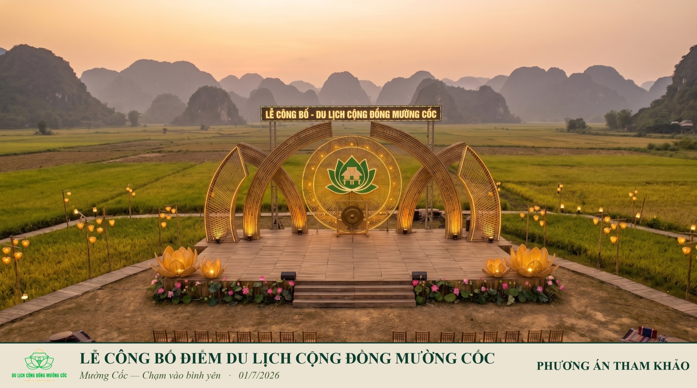
Đường vào sự kiện được thiết kế như chương mở đầu của một câu chuyện, dẫn dắt khách từ thế giới bên ngoài bước dần vào không gian Mường. Ngay từ cổng chào, vật liệu tre — gỗ — lá và hoa văn cạp váy hình thoi báo hiệu rõ đây là vùng đất của người Mường, tạo cảm giác chuyển tiếp nhẹ nhàng và liền mạch về bản sắc.
Trong đêm, hệ thống đèn lung linh hai bên lối đi tạo hiệu ứng thị giác ấm áp và sang trọng, nhưng vẫn giữ tông màu hài hòa với thiên nhiên, không chói gắt, không nhân tạo hóa cảnh quan. Ánh sáng được dùng để dẫn lối và gợi cảm xúc, đưa khách đi qua từng lớp không gian, mỗi bước một chi tiết văn hóa, để khi đến được sân khấu chính, ấn tượng về một Mường Cốc bình yên và đậm bản sắc đã được hình thành trọn vẹn.
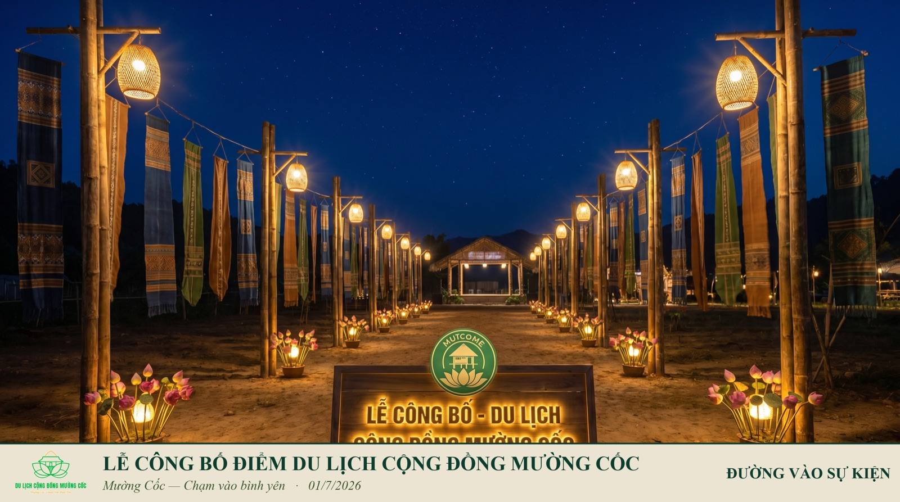
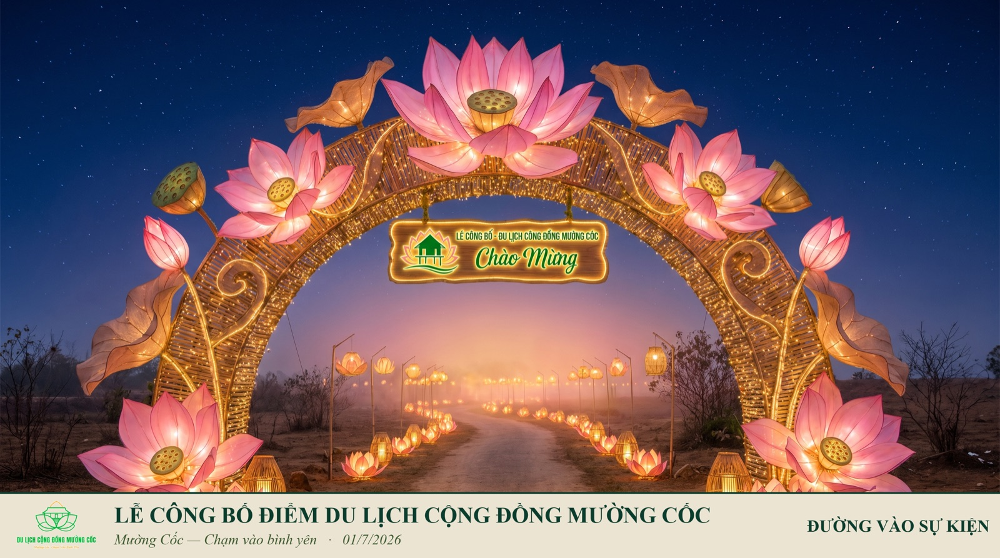
Góc check-in được bố trí như một điểm chạm truyền thông trọng yếu, nơi logo và slogan "Mường Cốc — Chạm vào bình yên" được đặt nổi bật để mỗi bức ảnh khách chụp đều mang theo nhận diện điểm đến. Đây chính là cơ chế lan tỏa tự nhiên và bền vững nhất: hình ảnh đẹp được chia sẻ trên mạng xã hội sau sự kiện, kéo dài hiệu ứng truyền thông vượt ra ngoài thời lượng một buổi lễ.
Khác với một phông nền chụp ảnh thông thường, góc check-in tại Mường Cốc còn làm nhiệm vụ giới thiệu sản phẩm: tích hợp hình ảnh bản đồ và các tuyến tham quan tiêu biểu để khách vừa lưu giữ kỷ niệm, vừa nhận biết Mường Cốc có những trải nghiệm gì. Nhờ đó, mỗi lượt check-in không chỉ là một tấm ảnh đẹp mà còn là một thông điệp quảng bá sản phẩm du lịch lan đi xa hơn.
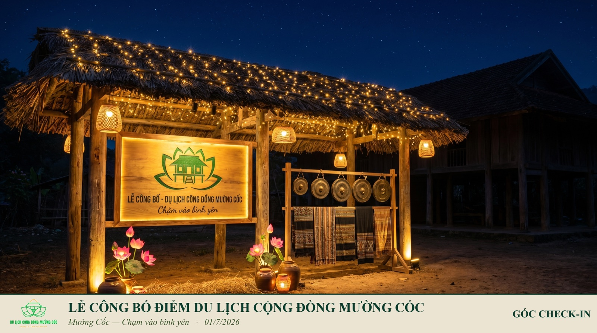
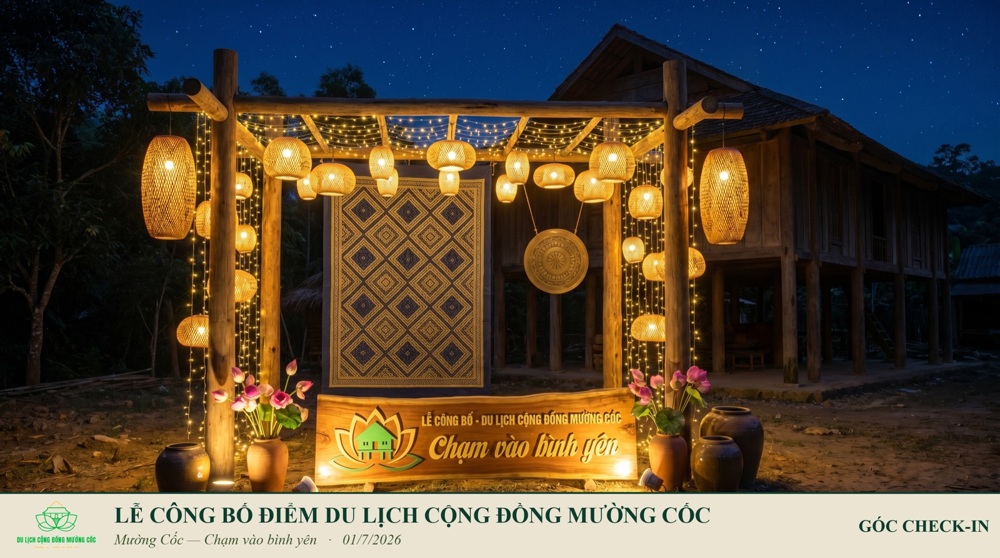
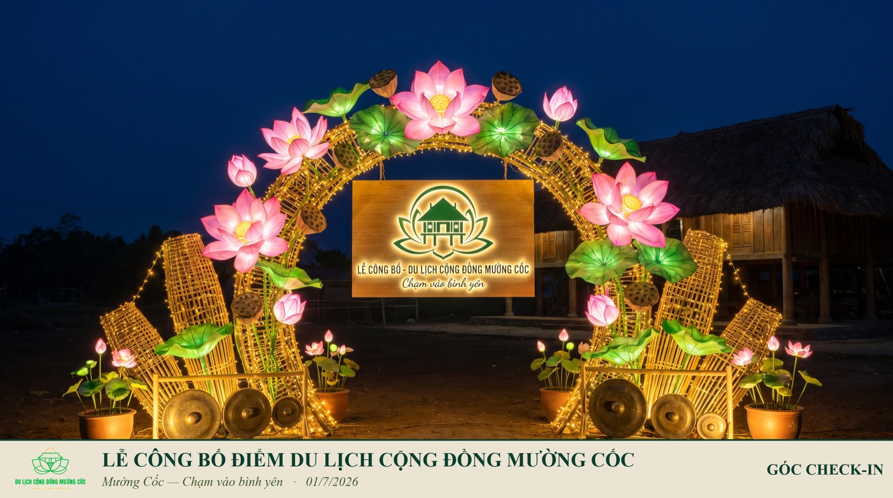
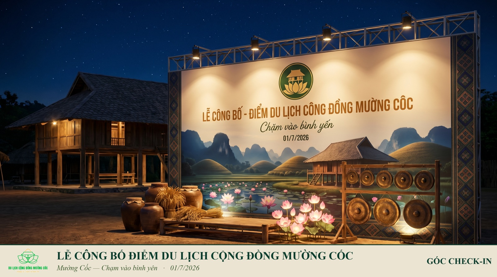
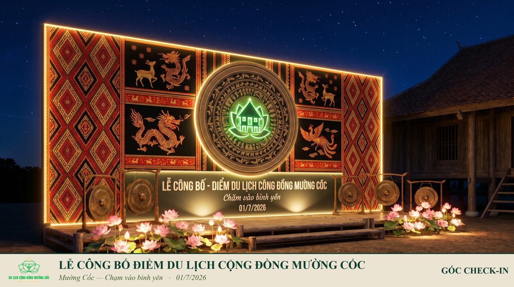
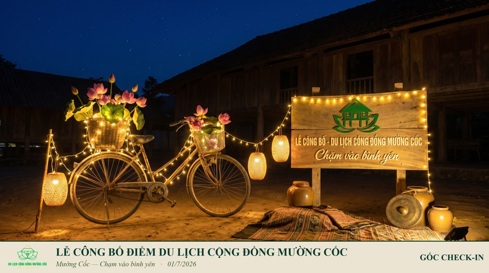
Không gian văn hóa Mường đối diện sân khấu được tổ chức lại theo nguyên tắc tối giản có chủ đề, khắc phục triệt để tình trạng trưng bày dày đặc dễ khiến tổng thể giống một gian triển lãm hội chợ hơn là một không gian trải nghiệm du lịch chuyên nghiệp. Toàn bộ khu vực được phân bổ theo tỷ lệ rõ ràng: khoảng 50% diện tích dành cho bản đồ du lịch và nhận diện điểm đến làm điểm nhấn trung tâm, 25% cho nhóm chủ đề nông nghiệp Mường, 25% cho nhóm chủ đề văn hóa Mường. Đồng thời, số lượng hiện vật dự kiến được giảm ít nhất 40% để không gian thông thoáng, dễ quan sát và dễ chụp ảnh hơn.
Khu vực trung tâm dài khoảng 4–5m được dành riêng cho bản đồ du lịch Mường Cốc, tích hợp logo, slogan và các tuyến tham quan đặc trưng, trở thành nội dung chính mà khách nhận diện đầu tiên. Hai cụm chủ đề nông nghiệp và văn hóa được bố trí cân đối hai bên, mỗi cụm chỉ giữ lại những hiện vật tiêu biểu nhất, đủ kể câu chuyện mà không gây quá tải thị giác. Riêng khu vực xe đạp được tách hẳn thành một Cycling Station độc lập, cách backdrop khoảng 3–5m, đóng vai trò là điểm xuất phát tour đạp xe khám phá làng Mường — vừa gọn gàng về thị giác, vừa làm nổi bật một sản phẩm du lịch chủ lực thay vì để xe lẫn dưới chân tường trưng bày.
Cụm nghề nghiệp tôn vinh đôi bàn tay khéo léo của người Mường qua các nghề thủ công truyền thống: khung dệt thổ cẩm, đồ đan lát mây tre và các vật dụng sinh hoạt làm bằng tay. Mỗi hiện vật được chọn lọc kỹ để đại diện cho một câu chuyện nghề, gắn với khả năng phát triển thành sản phẩm trải nghiệm và quà lưu niệm cho du khách, thay vì chỉ trưng bày tĩnh.
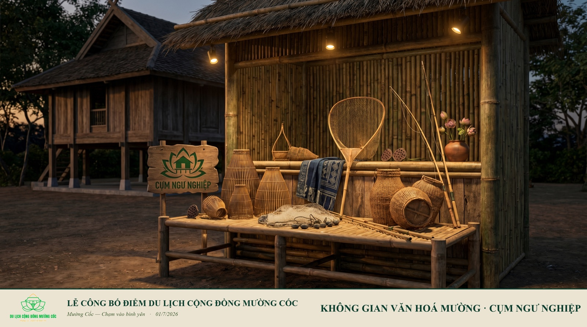
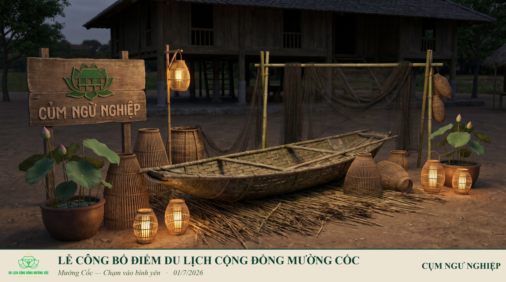
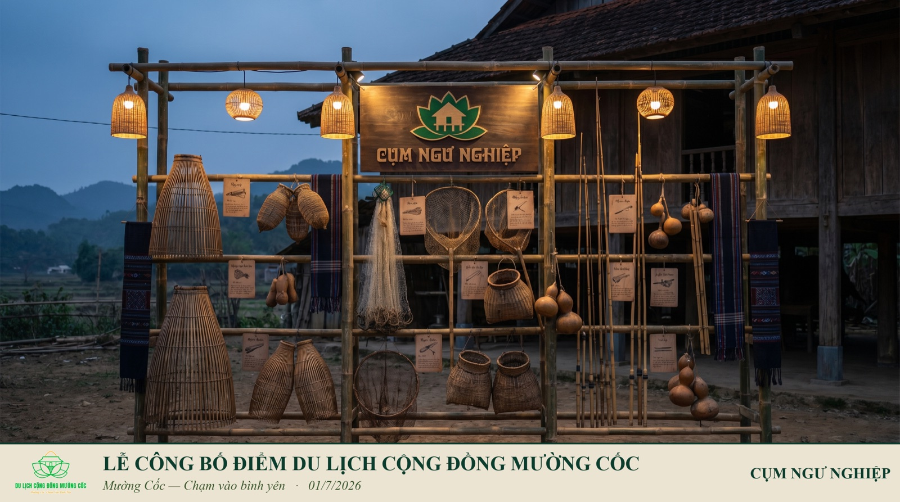
Cụm nông nghiệp giới thiệu đời sống canh tác của người Mường qua một số nông cụ tiêu biểu như cày, bừa, liềm, gùi cùng các dụng cụ sản xuất truyền thống được chọn lọc tinh gọn. Đây là nền tảng để dẫn dắt khách tới sản phẩm trải nghiệm nông nghiệp thực tế tại Mường Cốc — từ ruộng đồng đến gùi nông sản — kết nối hiện vật trưng bày với hoạt động trải nghiệm có thể tham gia ngay.
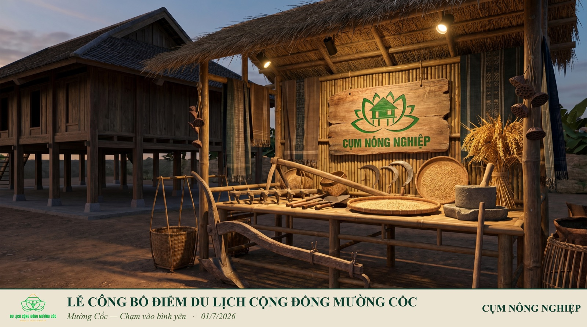
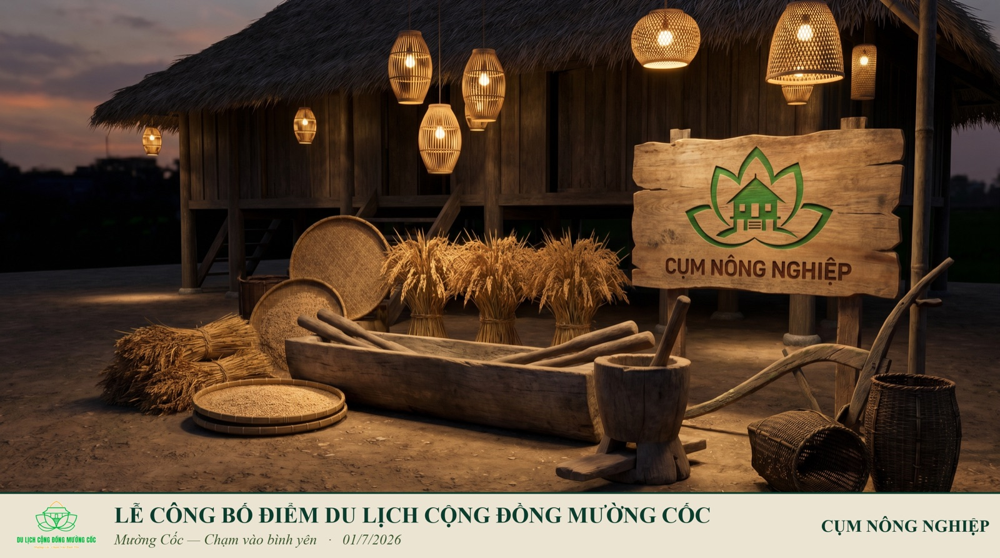
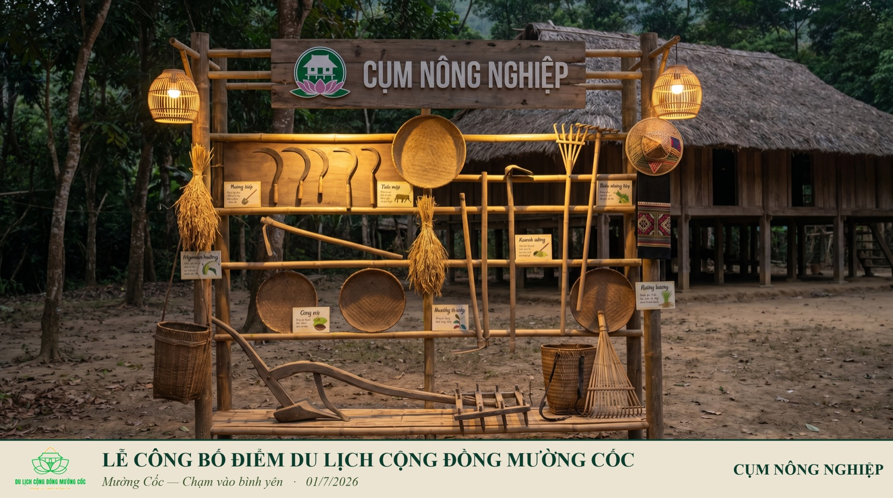
Cụm tưới tiêu kể câu chuyện con người Mường ứng xử khéo léo với nguồn nước và địa hình qua các công cụ dẫn nước, guồng nước và phương thức canh tác gắn với đồng ruộng, rừng tràm. Cụm này làm nổi bật mối quan hệ hài hòa giữa cộng đồng và thiên nhiên — đúng tinh thần "Thiên nhiên thật" — đồng thời gợi mở các tuyến tham quan cảnh quan nước và rừng tràm đặc trưng của điểm đến.
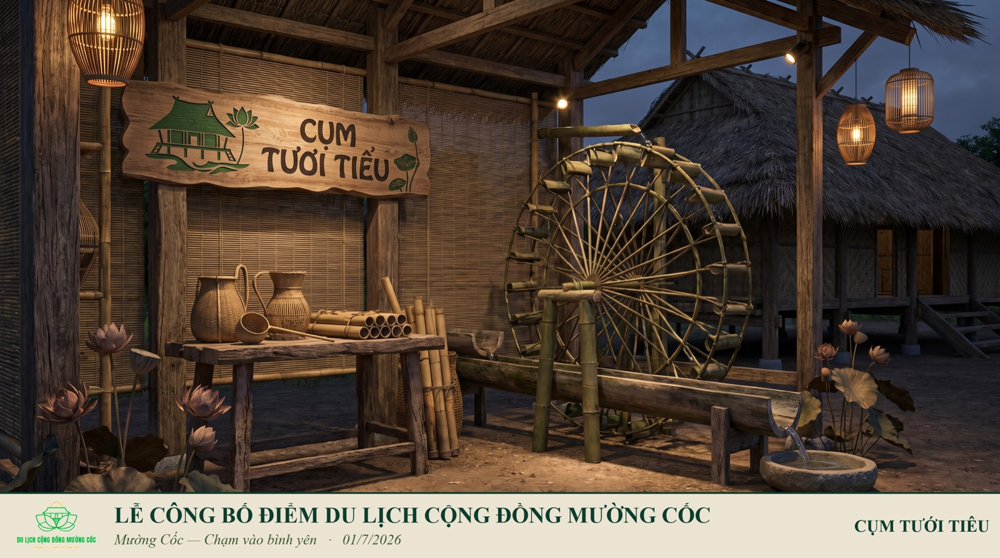
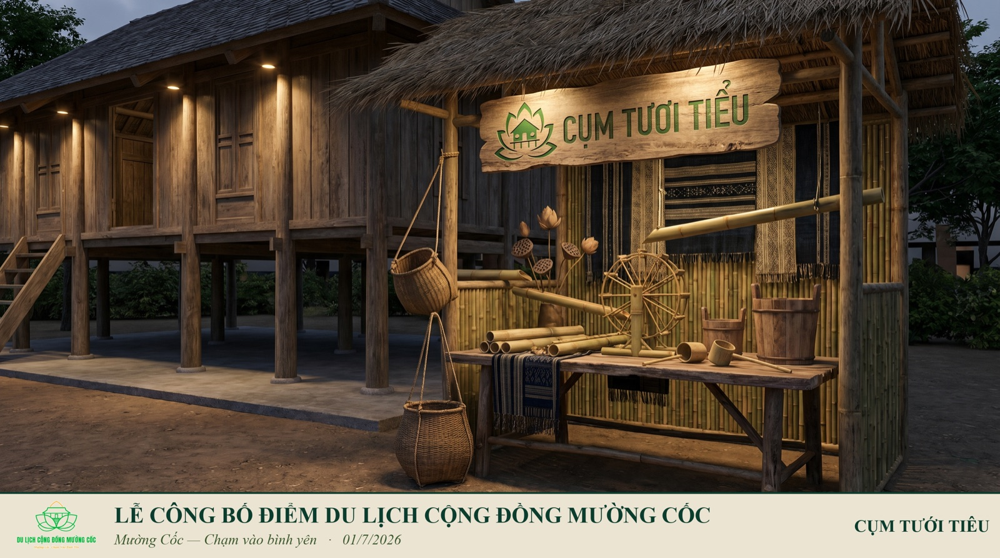
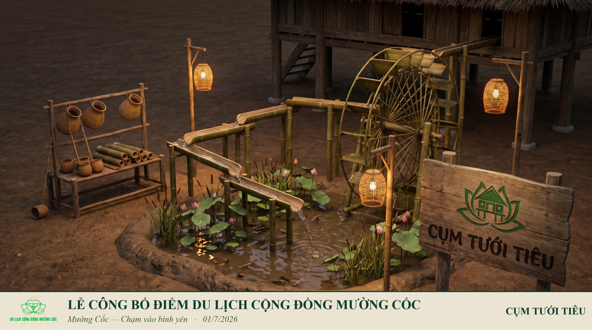
Cụm múa rối và diễn xướng dân gian giới thiệu chiều sâu đời sống tinh thần của người Mường, với cồng chiêng, sắc bùa và các hình thức trình diễn truyền thống. Cụm này được tiết chế để giữ giá trị văn hóa chân thực, tránh sân khấu hóa quá mức, đồng thời mở ra khả năng phát triển thành các phần trải nghiệm văn hóa sống động cho du khách trong các tuyến tham quan.
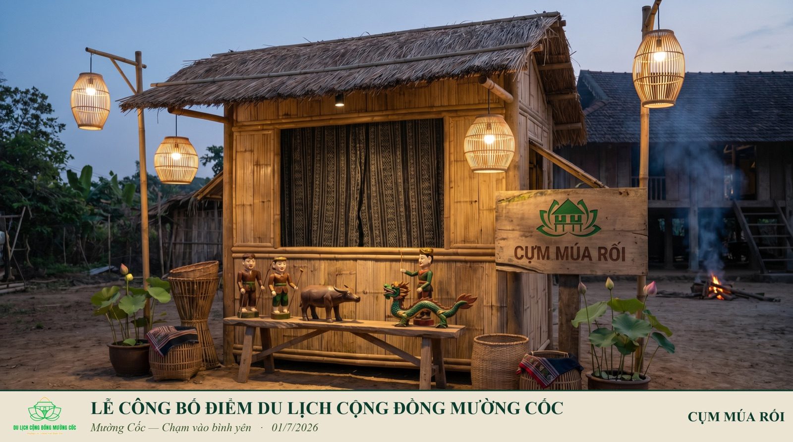
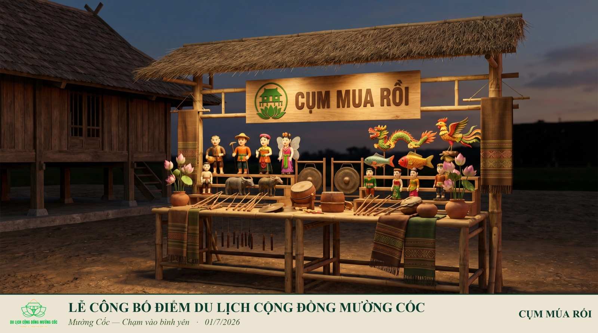
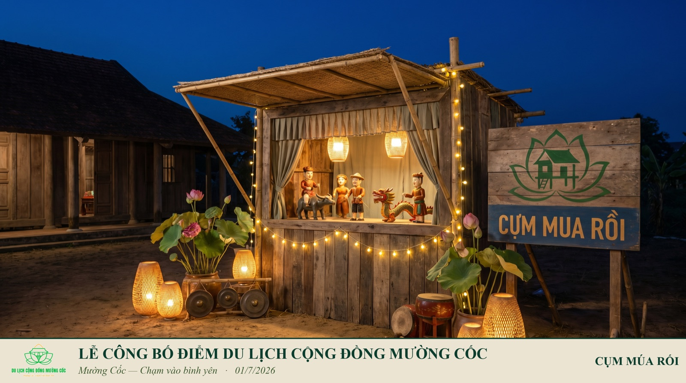
Bố trí tổng thể được tổ chức theo một luồng di chuyển có chủ đích, dẫn dắt khách qua từng lớp trải nghiệm một cách tự nhiên. Khách bắt đầu từ cổng chào mang đậm chất Mường, đi qua khu gian hàng OCOP và các cụm văn hóa, tiếp đến là đường tranh kể chuyện về vùng đất và con người Mường Cốc. Tuyến dẫn này có nhiệm vụ "khởi động" cảm xúc và cung cấp thông tin nền trước khi khách bước vào những điểm nhấn chính.
Tiếp nối là không gian văn hóa Mường đối diện sân khấu — nơi đặt bản đồ du lịch và hai cụm chủ đề nông nghiệp, văn hóa theo tỷ lệ đã hoạch định — rồi đến góc check-in nhận diện điểm đến. Các tiện ích phục vụ như khu vệ sinh và điểm tiếp nước được bố trí thuận tiện trên hành trình nhưng không cắt ngang trục thị giác chính, bảo đảm sự thoải mái mà không phá vỡ mạch trải nghiệm.
Trọng tâm của toàn bộ mặt bằng là khu vực sân khấu, phía trước là khu bàn ghế đại biểu được sắp đặt hướng thẳng vào tâm điểm trình diễn và màn hình bản đồ tuyến. Khu trò chơi dân gian được đặt ở vị trí tạo không khí lễ hội, kéo dài thời gian lưu lại và tăng tương tác của khách. Toàn bộ logic luồng di chuyển — từ cổng chào, gian hàng và cụm văn hóa, đường tranh, không gian văn hóa Mường, check-in, tiện ích, đến sân khấu, khu đại biểu và trò chơi dân gian — được tính toán để mỗi điểm dừng đều phục vụ một mục tiêu kể chuyện hoặc quảng bá sản phẩm, kết thúc bằng dấu ấn mạnh nhất tại sân khấu công bố.
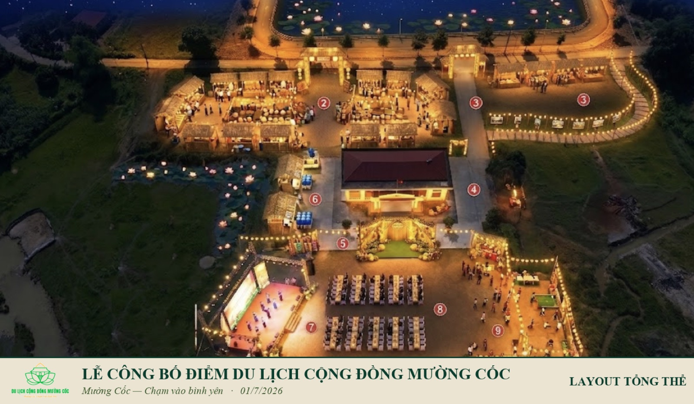